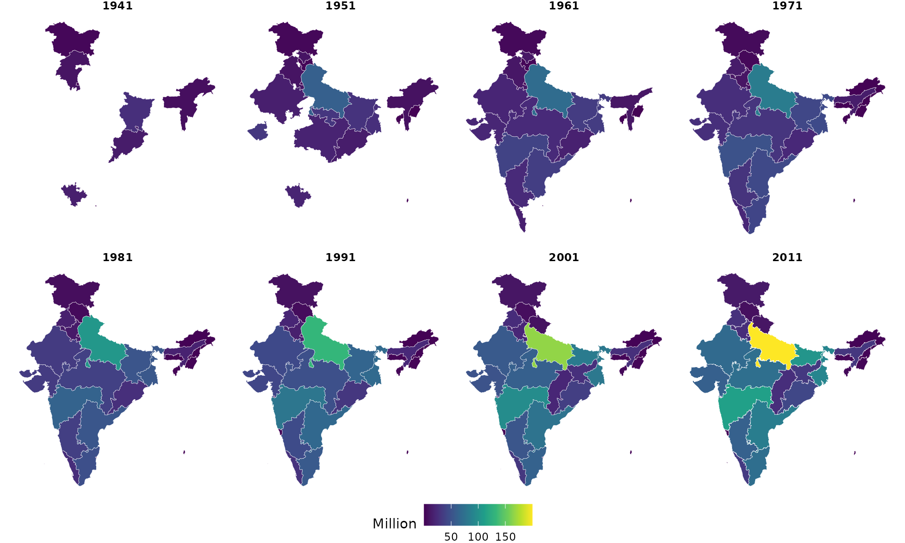
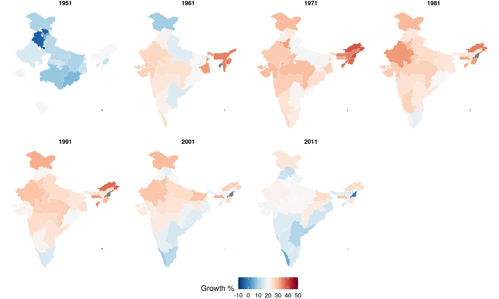

library(indiacensus)
library(dplyr)
#>
#> Attaching package: 'dplyr'
#> The following objects are masked from 'package:stats':
#>
#> filter, lag
#> The following objects are masked from 'package:base':
#>
#> intersect, setdiff, setequal, union
library(ggplot2)State Population Over Time
years <- c(1941, 1951, 1961, 1971, 1981, 1991, 2001, 2011)
pop_geo <- lapply(years, function(y) {
census_population_time_series |>
filter(geography == "state", year == y) |>
attach_geometry(year = y, geography = "state")
}) |> bind_rows()
ggplot(pop_geo) +
geom_sf(aes(fill = population / 1e6), color = "white", linewidth = 0.1) +
scale_fill_gradientn(colors = get_palette("viridis"), name = "Million") +
facet_wrap(~year, nrow = 2) +
theme_void() +
theme(strip.text = element_text(face = "bold"), legend.position = "bottom")
Decadal Growth Rate
growth_years <- c(1951, 1961, 1971, 1981, 1991, 2001, 2011)
pop <- census_population_time_series |>
filter(geography == "state") |>
arrange(state_name, year)
growth <- pop |>
group_by(state_name) |>
mutate(growth_rate = 100 * (population - lag(population)) / lag(population)) |>
filter(!is.na(growth_rate), year %in% growth_years) |>
ungroup()
growth_geo <- lapply(growth_years, function(y) {
growth |>
filter(year == y) |>
attach_geometry(year = y, geography = "state")
}) |> bind_rows()
ggplot(growth_geo) +
geom_sf(aes(fill = growth_rate), color = "white", linewidth = 0.1) +
scale_fill_gradientn(colors = get_palette("blue_red"), name = "Growth %", limits = c(-10, 50)) +
facet_wrap(~year, nrow = 2) +
theme_void() +
theme(strip.text = element_text(face = "bold"), legend.position = "bottom")